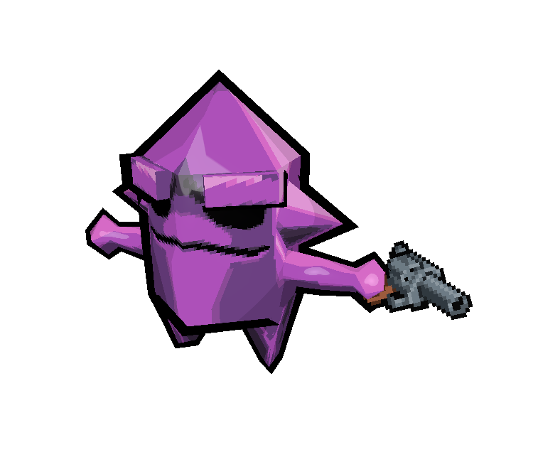
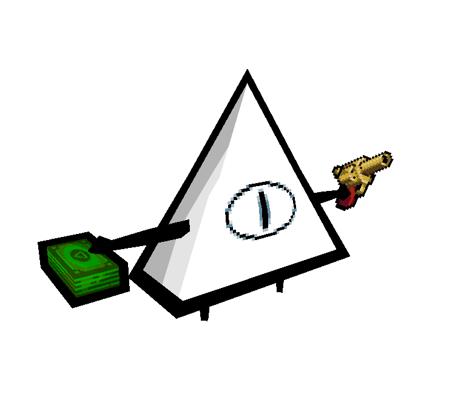
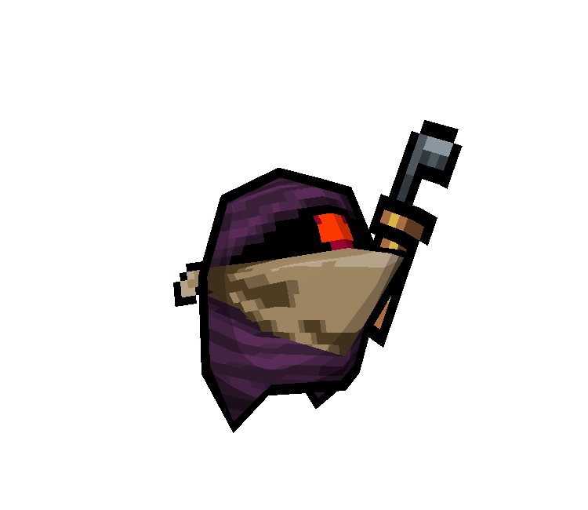
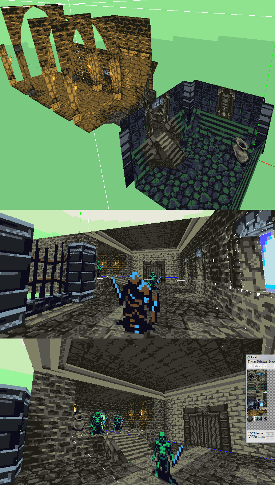
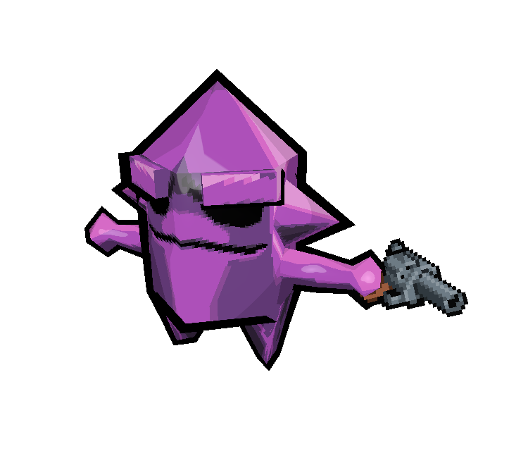
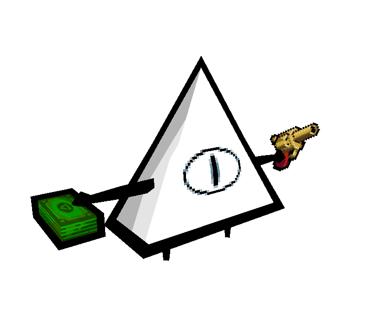
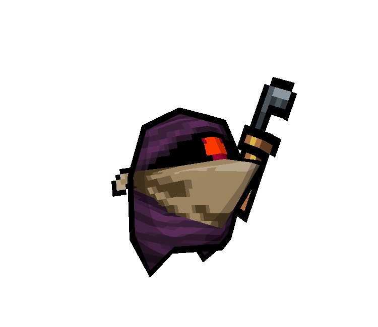

Lowpoly Models - Nuclear Throne
This set of models was a for-fun project of mine to remake the popular roguelike indie game Nuclear Throne, with lowpoly 3D assets rather than 2D sprites.
  This model was made with heavy inspiration from Kenneth Fejer's lowpoly modeling style. The design of this spaceship is a throwback to Faye's gunship from the anime Cowboy Bebop.
This model was made with an interesting program called Crocotile3D, which is a 3D DCC program with a tile-based workflow. The textures are these very cool GBC-style dark souls sprites made by Ryumaru over at the Pixelation forums.
This set of models was a for-fun project of mine to remake the popular roguelike indie game Nuclear Throne, with lowpoly 3D assets rather than 2D sprites.
  